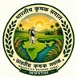
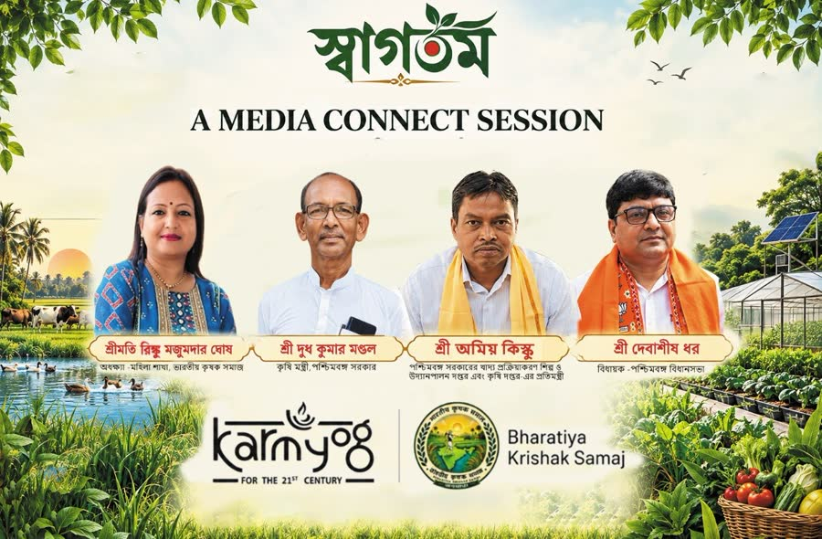
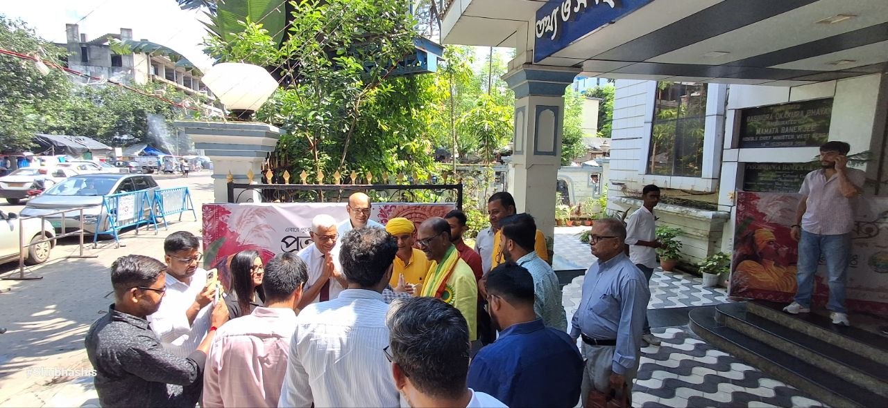
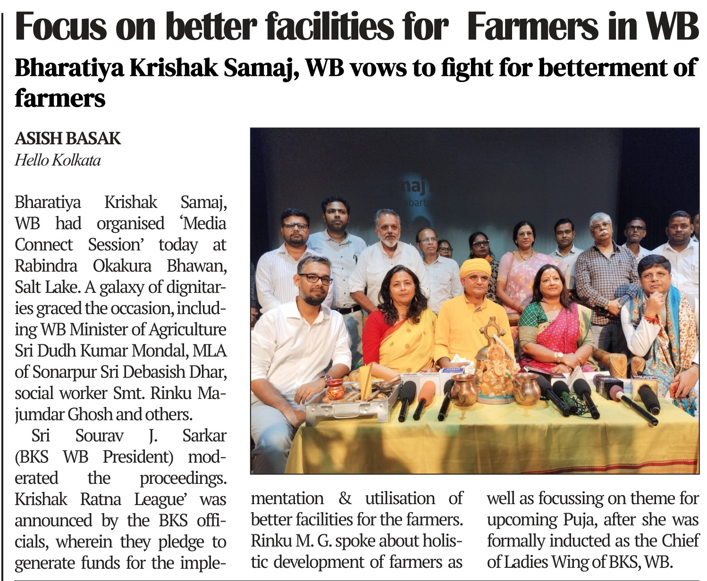
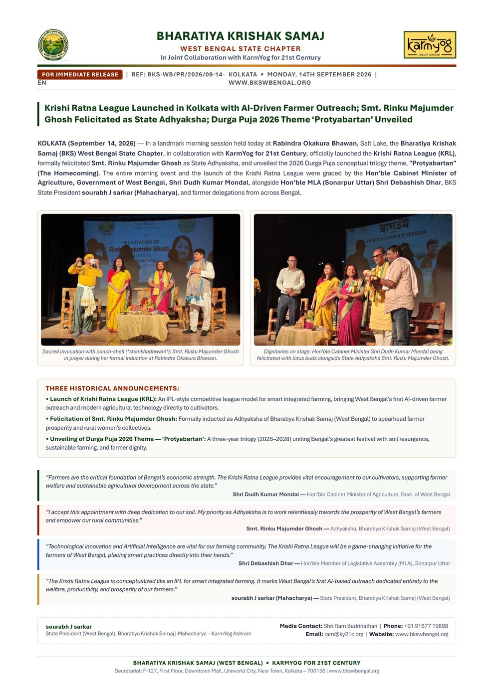

Shri Dudh Kumar MondalHon'ble Minister of Agriculture, West Bengal
The Minister
Shri Dudh Kumar Mondal, Hon'ble Minister of Agriculture, West Bengal, was on the stage at the opening. Krishi Ratna League Bengal was named in that room.

14 September 2026
A Media Connect at Rabindra Okakura Bhawan. Krishi Ratna League Bengal begins.
Press kitIssued in English and Bangla from Bharatiya Krishak Samaj West Bengal and KarmYog. The card is an artefact of the morning. Body copy of this essay names only those who were in the hall.

The order as issued. Photographs below carry the live room.
09:3011:10
Sacred opening. KarmYog Seva Mantra and Vande Mataram.
Welcome and stage call. Smt. Reena J. Sarkar.
Video testimonial. Shri Partha S. Chatterjee, Global Ambassador, BKS West Bengal. Video keynote from Dr. Krishan Bir Chaudhary.
Foundational vision and KRL Bengal launch. MahAcharya Shri Sourabh J. Sarkar.
Felicitation of Smt. Rinku Majumder Ghosh, Adhyaksha, Mahila Wing.
Ministerial address. Shri Dudh Kumar Mondal, Hon'ble Minister of Agriculture, West Bengal.
Keynote. Smt. Rinku Majumder Ghosh.
Guest of Honour. Shri Debashish Dhar, MLA, Sonarpur Uttar.
Krishak Samaj Durga Puja 2026 announcement. Smt. Reena J. Sarkar.
Media questions. MahAcharyaJi and Smt. Rinku Majumder Ghosh.
Vote of thanks and National Anthem. Smt. Reena J. Sarkar.

Bamboo, diya, tulsi, a yellow cloth on the lectern. The hall at Okakura before the first greeting.
Stage set. Welcome banner, puja, and the four invited faces as printed.

MahAcharya Shri Sourabh J. Sarkar at the lectern. Smt. Reena J. Sarkar, Smt. Rinku Majumder Ghosh, and Shri Dudh Kumar Mondal on the bamboo seats.
The hall played the film of Shri Partha S. Chatterjee, Global Ambassador and Senior Advisor for AI, Technology and Energy Transition, Bharatiya Krishak Samaj West Bengal.
Shri Dudh Kumar MondalHon'ble Minister of Agriculture, West Bengal
Shri Dudh Kumar Mondal, Hon'ble Minister of Agriculture, West Bengal, was on the stage at the opening. Krishi Ratna League Bengal was named in that room.

Smt. Rinku Majumder GhoshAdhyaksha, Mahila Wing, Bharatiya Krishak Samaj
Smt. Rinku Majumder Ghosh was felicitated as Adhyaksha of the Mahila Wing, Bharatiya Krishak Samaj West Bengal. The badge sat on the pink sari for the rest of the morning.

Shri Debashish DharMLA, Sonarpur Uttar
Shri Debashish Dhar, MLA, Sonarpur Uttar, addressed the hall from the yellow-draped lectern.
The argument of the morning, in each voice. Exact words from the recordings will replace these lines.
The farmer is not a backdrop to policy. Krishi Ratna League puts the field at the centre of Bengal's next public contest.
Half of Bengal's farm is a woman. The Mahila Wing is not a side room of the Samaj.
Protyabartan is not nostalgia. It is the village asking its children to stand with the soil again.
A league with a working farm at the end of it, not a trophy on a shelf.

Launch of Krishi Ratna League Bengal on the screen. MahAcharyaJi at the lectern. Reena, Rinku, Dhar seated.


After the programme the mics closed in. MahAcharyaJi, Smt. Rinku Majumder Ghosh, Shri Debashish Dhar and Smt. Reena J. Sarkar took the questions together. Bonglive, 24 Ghanta and the rest of the room stayed until the last answer.



A running record of the coverage. Clippings, broadcast and video from the morning of 14 September 2026 are added here as they appear.

Reported by Asish Basak on the Hello Kolkata Focus page. The Media Connect session, the Krishi Ratna League announcement, and Smt. Rinku Majumder Ghosh on the holistic development of farmers after her induction as Chief of the Ladies Wing, BKS West Bengal.
Download the page (PDF)Issued for immediate release. Ref BKS-WB/PR/2026/09-14. Krishi Ratna League launched with AI-driven farmer outreach, Smt. Rinku Majumder Ghosh felicitated as State Adhyaksha, and the Durga Puja 2026 theme Protyabartan unveiled. English and Bangla, two pages.
Download the press release (PDF)
Stills and clips from the Media Connect. The Krishi Ratna League intro played behind the welcome.